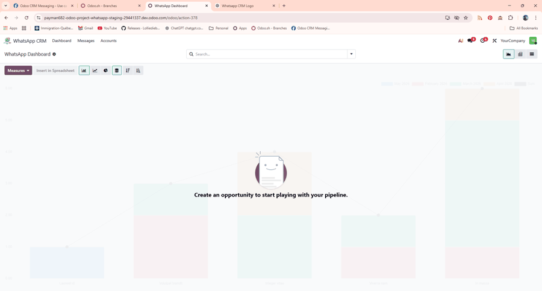
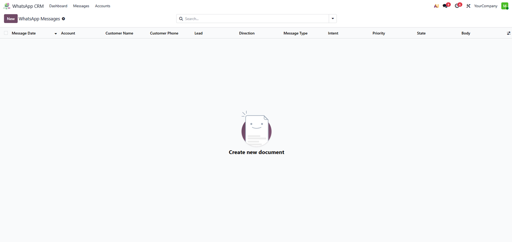
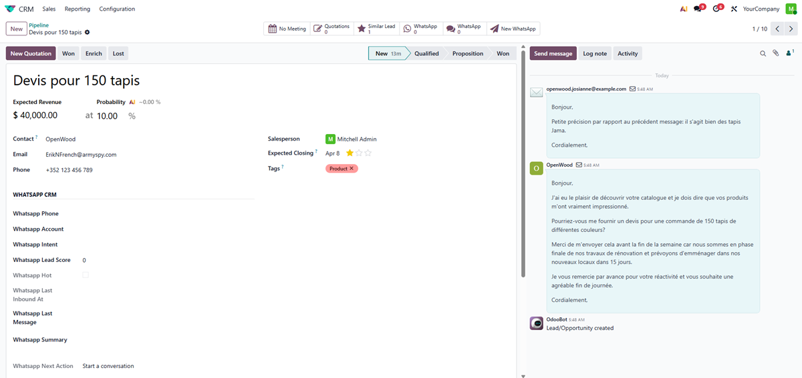
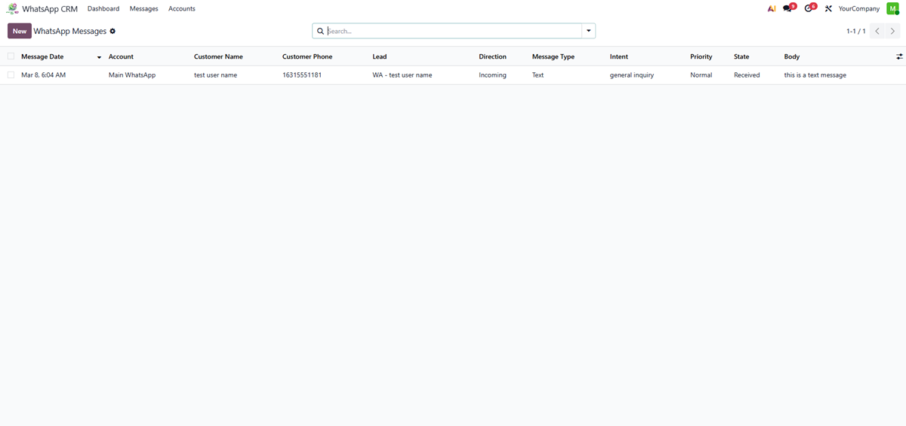
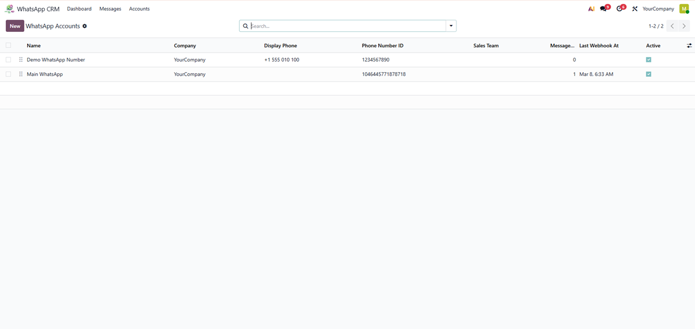

Connect WhatsApp Business with Odoo CRM and automatically convert customer messages into sales opportunities.
See how WhatsApp messages automatically create CRM leads and allow replies directly from Odoo.

WhatsApp message automatically creates CRM lead
Incoming WhatsApp messages dashboard

Reply to WhatsApp directly from Odoo

WhatsApp message reply popup

Manage multiple WhatsApp accounts
Webhook integration and conversation tracking
